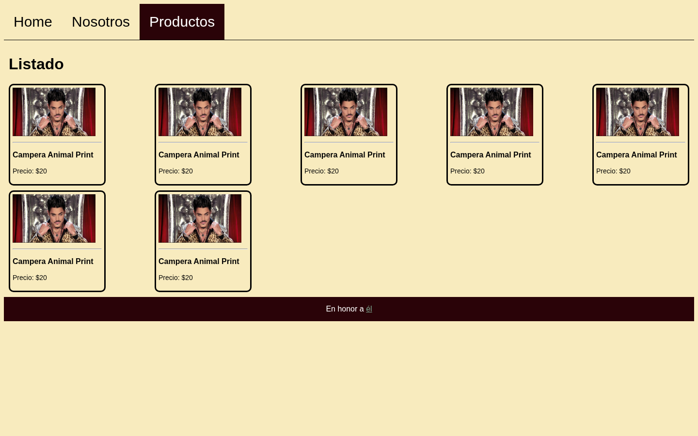
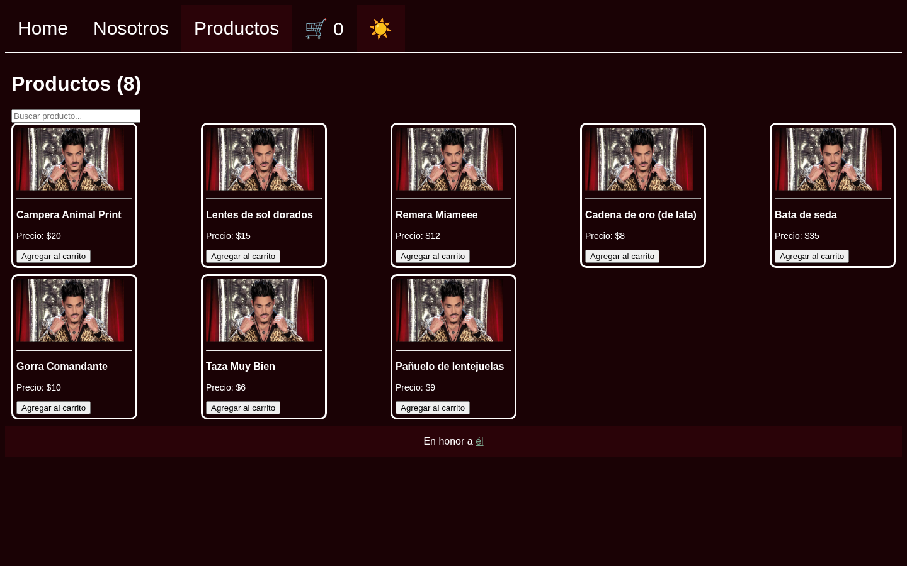

Intro Camejo — Introducción al Desarrollo de Software
JavaScript y el DOM
Del HTML estático a páginas que reaccionan
Clase JavaScript — 2C 2026
Intro Camejo
 01
01
Agenda
- .01¿Qué es JavaScript?
- .02Sintaxis en 20 minutos
- .03Asincronismo (adelanto)
- .04El DOM
- .05Práctica: Ricky Fort Merch
- .06Ejercicios
- .07Soluciones
- .08Cierre
Intro Camejo
02
Sección .01
¿Qué es JavaScript?
Intro Camejo
03
.01 — ¿Qué es JavaScript?
El tercer lenguaje de la web
- HTML dice qué hay en la página, CSS dice cómo se ve y JavaScript dice qué hace
- Es un lenguaje de programación de verdad: variables, condiciones, ciclos, funciones
- Corre en todos los navegadores sin instalar nada: por eso es el lenguaje de la webInfo
Intro Camejo
04
.01 — ¿Qué es JavaScript?
Un poco de historia: 10 días de 1995
- Brendan Eich lo crea en Netscape en 1995, en unos 10 días, para darle vida a las páginas del navegador
- Se llamó Mocha, después LiveScript y al final JavaScript
- El último nombre salió de un acuerdo de Netscape con Sun Microsystems para aprovechar la fama de JavaNota
Intro Camejo
05
.01 — ¿Qué es JavaScript?
Más allá del nombre, Java y JavaScript no se relacionan
Java
- Sun (James Gosling), 1995
- Se compila a bytecode y corre en la JVM
- Tipado estático:
int precio = 20; - Orientado a objetos con clases
JavaScript
- Netscape (Brendan Eich), 1995
- Lo interpreta el navegador (hoy con compilación JIT)
- Tipado dinámico:
let precio = 20; - Objetos basados en prototipos (
classllegó después)
Intro Camejo
06
.01 — ¿Qué es JavaScript?
De la guerra de navegadores a ECMAScript
- 1996: Microsoft copia el lenguaje como JScript en Internet Explorer, y cada navegador hace lo suyo
- 1997: se estandariza en Ecma como ECMAScript (ECMA-262). La marca "JavaScript" hoy es de Oracle
- 2009: ES5, y nace Node.js: JS también fuera del navegador
- 2015: ES6/ES2015, el gran cambio:
let/const, flechas,class, módulos, promesas. Desde ahí sale una versión por año - Hoy: el lenguaje más usado en la encuesta de Stack Overflow 2026 (62% de los respondentes)Info
Intro Camejo
07
.01 — ¿Qué es JavaScript?
¿Dónde corre?
- En el navegador: cada pestaña tiene su motor (V8 en Chrome, SpiderMonkey en Firefox)
- En el servidor o la terminal, con Node.js: el mismo lenguaje sin página
- Hoy nos quedamos en el navegador: primero el lenguaje, al final JS que lee y modifica la páginaTip
Intro Camejo
08
.01 — ¿Qué es JavaScript?
La consola y las DevTools
- F12 (o click derecho → Inspeccionar) → pestaña Console
- Ahí aparecen los
console.logy los errores (en rojo, con archivo y línea) - También se puede escribir JS directo y probarlo ahíTip
Intro Camejo
09
Intro Camejo
10
Sección .02
Sintaxis en 20 minutos
Intro Camejo
11
.02 — Sintaxis en 20 minutos
Variables:
let y constjs
const nombre = "Ricky"; // no se puede reasignar
let visitas = 0; // sí se puede
visitas = visitas + 1;
nombre = "Fort"; // TypeError- Usen
constpor defecto yletsolo si el valor cambia letyconstviven dentro de las llaves{ }donde se declaran (scope de bloque)vares la forma vieja: ignora las llaves y la van a ver en código antiguo. No la usenNota- Probalo: abrir en LiveCodes ↗
Intro Camejo
12
.02 — Sintaxis en 20 minutos
Tipos: dinámico y débil
js
typeof "hola" // "string"
typeof 20 // "number" (enteros y decimales son lo mismo)
typeof true // "boolean"
typeof undefined // "undefined"
typeof [1, 2] // "object" (los arrays son objetos)
typeof null // "object" (un error histórico)- Dinámico: las variables no tienen tipo, lo tienen los valores (
let x = 42; x = "Hola";es válido) - Débil: si mezclás tipos, JS convierte solo en vez de dar error (coerción, en la próxima)
- Simples (
number,string,boolean), vacíos (undefined,null) y compuestos (objetos, arrays)Info - Probalo: abrir en LiveCodes ↗
Intro Camejo
13
.02 — Sintaxis en 20 minutos
Operadores y
===js
2 + 3 * 4 // 14
"20" + 1 // "201" (concatena)
"20" - 1 // 19 (convierte)
"1" == 1 // true (convierte antes de comparar)
"1" === 1 // false (tipo y valor)- Usen siempre
===y!==Warning &&,||y!como en cualquier lenguaje- Probalo: abrir en LiveCodes ↗
Intro Camejo
14
.02 — Sintaxis en 20 minutos
if y forjs
if (precio > 15) {
console.log("caro");
} else {
console.log("barato");
}
for (let i = 0; i < 3; i++) { console.log(i); }
for (const nombre of ["Home", "Nosotros", "Productos"]) {
console.log(nombre);
}
Intro Camejo
15
.02 — Sintaxis en 20 minutos
Funciones y arrow functions
js
function conIva(precio) {
return precio * 1.21;
}
const conDescuento = (precio) => precio * 0.9;
console.log(conIva(20), conDescuento(20));- Las dos formas hacen lo mismo. La flecha es más corta y es la que vamos a usar en los eventos
- Una
functiondeclarada se puede llamar antes de la línea donde está (hoisting); una guardada enconst, no - Una función es un valor: se puede guardar en una variable o pasar a otra funciónInfo
- Probalo: abrir en LiveCodes ↗
Intro Camejo
16
.02 — Sintaxis en 20 minutos
Arrays y objetos
js
const productos = [
{ nombre: "Campera Animal Print", precio: 20 },
{ nombre: "Lentes de sol", precio: 15 },
];
productos.push({ nombre: "Remera", precio: 12 });
console.log(productos.length, productos[0].nombre);
Intro Camejo
17
.02 — Sintaxis en 20 minutos
map y filterjs
const precios = productos.map(p => p.precio); // [20, 15, 12]
const baratos = productos.filter(p => p.precio < 18); // 2 productos
const total = precios.reduce((a, b) => a + b, 0); // 47maptransforma cada elemento yfilterse queda con los que cumplen la condición- Ninguno modifica el array original: los dos devuelven uno nuevoTip
- Probalo: abrir en LiveCodes ↗
Intro Camejo
18
.02 — Sintaxis en 20 minutos
Imperativo vs declarativo
js
// Imperativo: el CÓMO, paso a paso
const pares = [];
for (let i = 0; i < numeros.length; i++) {
if (numeros[i] % 2 === 0) pares.push(numeros[i] * 2);
}
// Declarativo: el QUÉ
const resultado = numeros.filter(n => n % 2 === 0).map(n => n * 2);- Mismo resultado: duplicar los pares de
[1, 2, 3, 4, 5, 6]→[4, 8, 12] - El declarativo se lee como la consigna y no modifica el array originalTip
Intro Camejo
19
Sección .03
Asincronismo (adelanto)
Intro Camejo
20
.03 — Asincronismo (adelanto)
No todo pasa en orden
js
console.log("1");
setTimeout(() => console.log("2"), 1000);
console.log("3"); // imprime 1, 3, 2- Hay cosas que tardan (un timer, un pedido a un servidor), y JS no se queda esperando
- Les deja una función para "cuando termine" y sigue con lo demás
- Probalo: abrir en LiveCodes ↗
Intro Camejo
21
.03 — Asincronismo (adelanto)
fetch: pedirle datos a una APIjs
async function dolarBlue() {
const respuesta = await fetch("https://dolarapi.com/v1/dolares/blue");
const dolar = await respuesta.json();
console.log("US$20 = $" + 20 * dolar.venta);
}
dolarBlue();awaitespera la respuesta sin congelar la página- Lo vemos a fondo el martes: JS en el navegador y consumo de una API públicaInfo
- Probalo: abrir en LiveCodes ↗
Intro Camejo
22
Sección .04
El DOM
Intro Camejo
23
.04 — El DOM
Cargar un script:
<script>html
<body>
...todo el contenido de la página...
<script src="app.js"></script>
</body>srcapunta a un archivo.jsaparte, igual que el CSS con<link>- Va al final del
<body>: así corre cuando la página ya está armadaWarning
Intro Camejo
24
.04 — El DOM
La página es un árbol
- El navegador convierte el HTML en objetos: el DOM (Document Object Model). JS los ve en
document
Intro Camejo
25
.04 — El DOM
Buscar elementos:
querySelectorjs
const titulo = document.querySelector("h1"); // el primero
const cards = document.querySelectorAll(".card"); // todos (NodeList)
const activo = document.querySelector(".navbar a.active");
console.log(cards.length);- Usan los mismos selectores que CSSTip
- Si no encuentra nada,
querySelectordevuelvenull - Probalo: abrir en LiveCodes ↗
Intro Camejo
26
.04 — El DOM
Cambiar contenido:
textContent e innerHTMLjs
titulo.textContent = "Productos";
const card = document.querySelector(".card");
card.querySelector(".card-price").textContent = "Precio: $25";
card.innerHTML = "<p class='card-name'>Agotado</p>";textContentcambia texto yinnerHTMLinterpreta HTML- Nunca metan en
innerHTMLtexto que escribió un usuario: abre la puerta a inyectar código (XSS)Danger - Probalo: abrir en LiveCodes ↗
Intro Camejo
27
.04 — El DOM
Clases y estilos
js
card.classList.add("seleccionada");
card.classList.remove("seleccionada");
card.classList.toggle("seleccionada"); // pone o saca
card.classList.contains("seleccionada"); // true / false
card.style.display = "none"; // estilo inline- Prefieran
classListy dejen el estilo en el CSS.stylesirve para casos puntualesTip - Probalo: abrir en LiveCodes ↗
Intro Camejo
28
.04 — El DOM
Crear elementos
js
const card = document.createElement("div");
card.className = "card";
card.innerHTML = '<p class="card-name">Lentes de sol</p>';
document.querySelector(".card-list").append(card);createElementcrea el nodo yappendlo cuelga del árbol: recién ahí se ve- También existen
prepend,before,afteryremove - Probalo: abrir en LiveCodes ↗
Intro Camejo
29
.04 — El DOM
Eventos:
addEventListenerjs
const card = document.querySelector(".card");
card.addEventListener("click", () => {
card.classList.toggle("seleccionada");
});- "Cuando pase esto, ejecutá esta función"
- La función se ejecuta cada vez que ocurre el evento, no cuando se escribe
- Probalo: abrir en LiveCodes ↗
Intro Camejo
30
.04 — El DOM
input y submitjs
buscador.addEventListener("input", () => {
console.log(buscador.value); // en cada tecla
});
formulario.addEventListener("submit", (evento) => {
evento.preventDefault(); // que no recargue la página
console.log("enviado");
});
Intro Camejo
31
Sección .05
Práctica: Ricky Fort Merch
Intro Camejo
32
.05 — Práctica: Ricky Fort Merch
La página de Manu

listado.html+style.cssdel repo ricky-fort-merch.navbarcon 3 links y.card-listcon 7.card(todas iguales)- Cada card tiene
.card-img,.card-namey.card-price - Hoy la hacemos reaccionar sin tocar el HTML
Intro Camejo
33
.05 — Práctica: Ricky Fort Merch
Preparación
html
<script src="app.js"></script>
</body>- Hagan una copia propia de
listado.htmlystyle.cssy creen unapp.jsvacío al lado - Agreguen el
<script>justo antes de</body>y abran la página con las DevTools abiertas - Cada ejercicio se suma al anterior en el mismo
app.jsTip
Intro Camejo
34
.05 — Práctica: Ricky Fort Merch
CSS que vamos a necesitar
css
.card.seleccionada { background-color: var(--color-terciario); color: white; }
body.oscuro { --color-primary: #1a0205; color: white; }
body.oscuro .navbar a { color: white; }- Al final de
style.css. Usan las variables que ya define la página en:root - JS solo pone y saca clases. Cómo se ven lo sigue decidiendo el CSSInfo
Intro Camejo
35
Sección .06
Ejercicios
Intro Camejo
36
.06 — Ejercicios
Ejercicios 1 a 3
- 1. Consola: con
querySelectorAll, imprimí cuántas cards hay y el nombre de cada una - 2. Datos en un array: armá un array
productoscon 8 objetos{ nombre, precio }(inventen) y generá las cards concreateElement. La foto: reusen elsrcde la primera.card-img - 3. Título: que el
h1digaProductos (8), contando las cards del DOM
- Mantengan las clases
card,card-img,card-nameycard-pricepara que el CSS siga funcionandoTip
Intro Camejo
37
.06 — Ejercicios
Ejercicios 4 a 7
- 4. Seleccionar: click en una card →
togglede la claseseleccionada - 5. Carrito: agregá
🛒 0a la navbar y un botón "Agregar al carrito" en cada card que sume 1 - 6. Buscador: un
<input>antes de.card-listque oculte las cards cuyo nombre no contiene lo escrito (sin importar mayúsculas) - 7. Modo oscuro: un link 🌙 en la navbar que haga
toggledeoscuroen elbody
- En el 5, el click del botón también llega a la card: busquen
stopPropagationWarning
Intro Camejo
38
.06 — Ejercicios
Desafío y bonus
- 8. Desafío: debajo de la lista, mostrá
Seleccionaste N productos: $Xsumando los precios de las cards seleccionadas (filter+reduce) - 9. Bonus asincrónico: con
fetcha https://dolarapi.com/v1/dolares/blue, mostrá cada precio también en pesos:Precio: US$20 (≈ $31.300)
- El 9 es adelanto del martes: si no sale, no pasa nadaNota
Intro Camejo
39
Sección .07
Soluciones
Intro Camejo
40
.07 — Soluciones
Solución 1
js
const cards = document.querySelectorAll(".card");
console.log("Hay " + cards.length + " productos");
for (const card of cards) {
console.log(card.querySelector(".card-name").textContent);
}consola
Hay 7 productos
Campera Animal Print (x7)
Intro Camejo
41
.07 — Soluciones
Solución 2: los datos
js
const IMG = document.querySelector(".card-img").src; // la única foto 😅
const productos = [
{ nombre: "Campera Animal Print", precio: 20 },
{ nombre: "Lentes de sol dorados", precio: 15 },
{ nombre: "Remera Miameee", precio: 12 },
{ nombre: "Cadena de oro (de lata)", precio: 8 },
{ nombre: "Bata de seda", precio: 35 },
{ nombre: "Gorra Comandante", precio: 10 },
{ nombre: "Taza Muy Bien", precio: 6 },
{ nombre: "Pañuelo de lentejuelas", precio: 9 },
];
Intro Camejo
42
.07 — Soluciones
Solución 2: el render
js
const lista = document.querySelector(".card-list");
lista.innerHTML = ""; // chau a las 7 camperas repetidas
for (const producto of productos) {
const card = document.createElement("div");
card.className = "card";
const img = document.createElement("img");
img.className = "card-img"; img.src = IMG;
const nombre = document.createElement("p");
nombre.className = "card-name";
nombre.textContent = producto.nombre;
const precio = document.createElement("p");
precio.className = "card-price";
precio.textContent = "Precio: $" + producto.precio;
card.append(img, nombre, precio);
lista.append(card);
}
Intro Camejo
43
.07 — Soluciones
Soluciones 3 y 4
js
const titulo = document.querySelector(".container h1");
titulo.textContent = "Productos (" + document.querySelectorAll(".card").length + ")";
for (const card of document.querySelectorAll(".card")) {
card.addEventListener("click", () => {
card.classList.toggle("seleccionada");
});
}- Los listeners van después del render: si se regeneran las cards, se pierdenWarning
Intro Camejo
44
.07 — Soluciones
Solución 5
js
const contador = document.createElement("a");
contador.href = "#";
contador.textContent = "🛒 0";
document.querySelector(".navbar").append(contador);
let enCarrito = 0;
for (const card of document.querySelectorAll(".card")) {
const boton = document.createElement("button");
boton.textContent = "Agregar al carrito";
boton.addEventListener("click", (evento) => {
evento.stopPropagation(); // que no seleccione la card
enCarrito++;
contador.textContent = "🛒 " + enCarrito;
});
card.append(boton);
}
Intro Camejo
45
.07 — Soluciones
Solución 6
js
const buscador = document.createElement("input");
buscador.placeholder = "Buscar producto...";
document.querySelector(".card-list").before(buscador);
buscador.addEventListener("input", () => {
const texto = buscador.value.toLowerCase();
for (const card of document.querySelectorAll(".card")) {
const nombre = card.querySelector(".card-name").textContent.toLowerCase();
card.style.display = nombre.includes(texto) ? "" : "none";
}
});
Intro Camejo
46
.07 — Soluciones
Solución 7
js
const botonModo = document.createElement("a");
botonModo.href = "#";
botonModo.textContent = "🌙";
document.querySelector(".navbar").append(botonModo);
botonModo.addEventListener("click", (evento) => {
evento.preventDefault(); // es un <a>: que no navegue
document.body.classList.toggle("oscuro");
botonModo.textContent = document.body.classList.contains("oscuro") ? "☀️" : "🌙";
});
Intro Camejo
47
.07 — Soluciones
Solución 8 (desafío)
js
const total = document.createElement("p");
document.querySelector(".card-list").after(total);
function actualizarTotal() {
const nombres = [...document.querySelectorAll(".card.seleccionada .card-name")]
.map(p => p.textContent);
const suma = productos
.filter(p => nombres.includes(p.nombre))
.reduce((acumulado, p) => acumulado + p.precio, 0);
total.textContent = "Seleccionaste " + nombres.length + " productos: $" + suma;
}
document.querySelector(".card-list").addEventListener("click", actualizarTotal);
actualizarTotal();
Intro Camejo
48
.07 — Soluciones
Solución 9 (bonus)
js
async function mostrarEnPesos() {
const respuesta = await fetch("https://dolarapi.com/v1/dolares/blue");
const dolar = await respuesta.json();
const precios = document.querySelectorAll(".card-price");
productos.forEach((producto, i) => {
const pesos = Math.round(producto.precio * dolar.venta);
precios[i].textContent =
"Precio: US$" + producto.precio + " (≈ $" + pesos.toLocaleString("es-AR") + ")";
});
}
mostrarEnPesos();
Intro Camejo
49
.07 — Soluciones
Así queda

- 8 productos generados desde un array
- Título con contador, cards seleccionables y carrito
- Buscador y modo oscuro
- Sin tocar una línea del HTML original
Intro Camejo
50
Sección .08
Cierre
Intro Camejo
51
.08 — Cierre
Resumen
- JS se depura en la consola (F12)
const/let,===, funciones flecha, arrays de objetos,map/filter- Asincronismo:
setTimeoutyfetchno frenan el resto del código - JS se carga con
<script>al final del<body> - DOM:
querySelector→ cambiar (textContent,classList) → crear (createElement+append) - Eventos:
addEventListenerconclick,inputysubmit - Martes 27/10: JS en el navegador y consumo de una API pública. Traigan el ejercicio 9 andandoInfo
Intro Camejo
52
Bibliografía
- MDN — JavaScript first steps (developer.mozilla.org/es/docs/Learn/JavaScript/First_steps)
- MDN — Introducción al DOM (developer.mozilla.org/es/docs/Web/API/Document_Object_Model/Introduction)
- MDN — Introducción a los eventos (developer.mozilla.org/es/docs/Learn/JavaScript/Building_blocks/Events)
- MDN — Array.prototype.map (developer.mozilla.org/es/docs/Web/JavaScript/Reference/Global_Objects/Array/map)
- MDN — Usando Fetch (developer.mozilla.org/es/docs/Web/API/Fetch_API/Using_Fetch)
- javascript.info — The Modern JavaScript Tutorial (es.javascript.info)
Intro Camejo
53
Intro Camejo
54